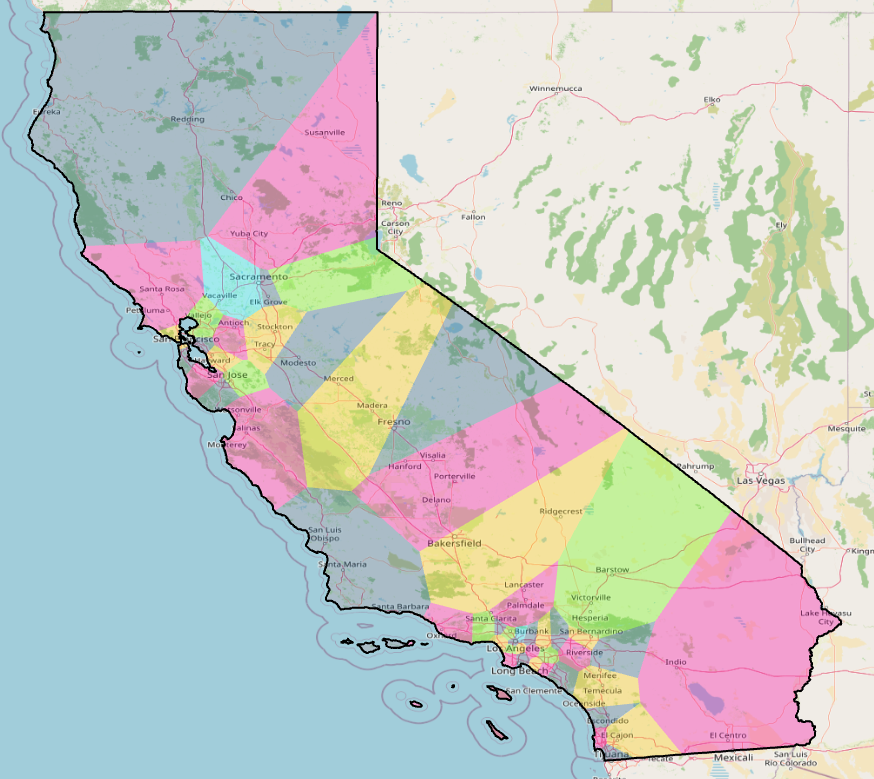

About
Philip N. Klein is a Professor of Theoretical Computer Science at Brown University and an Amazon Scholar working with the Models and Optimization team. His research focuses on graph algorithms, optimization, and approximation algorithms. Ongoing work addresses the design and implementation of GPU algorithms for discrete-optimization problems, including some projects internal to Amazon.
Algorithmic Redistricting

Research and projects focused on algorithmic approaches to political redistricting. For more details, visit the Redistricting Project.
Books
-
Algorithmic Foundations: Data Structures, Algorithms, and Intractability (Edition 0). Newtonian Press.
-
A Cryptography Primer: Secrets and Promises. Cambridge University Press.
-
Optimization Algorithms for Planar Graphs (coauthored with Shay Mozes). Upcoming, Cambridge University Press.
Teaching & Course Development
Courses Originated:
- The Matrix in Computer Science
- Computer Science: An Integrated Introduction I and II (with Leslie P. Kaelbling)
- Design and Analysis of Algorithms
- Topics in Advanced Algorithms
- Solving Hard Problems in Combinatorial Optimization: Theory and Systems (with Pascal Van Hentenryck)
- Secrets and Promises: A Course on Cryptography for Nonmajors